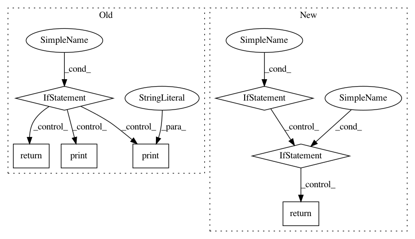

92816c9b9fa67b63a5638fd50e012e28f76bb4d9,gluoncv/model_zoo/model_store.py,,get_model_file,#Any#Any#Any#,186
Before Change
sha1_hash = tag
else:
sha1_hash = _model_sha1[name]
if os.path.exists(file_path):
if check_sha1(file_path, sha1_hash):
return file_path
else:
print("Mismatch in the content of model file detected. Downloading again.")
else:
print("Model file is not found. Downloading.")
if not os.path.exists(root):
os.makedirs(root)
zip_file_path = os.path.join(root, file_name + ".zip")
After Change
else:
sha1_hash = _model_sha1[name]
with portalocker.Lock(lockfile, timeout=int(os.environ.get("GLUON_MODEL_LOCK_TIMEOUT", 300))):
if os.path.exists(params_path):
if check_sha1(params_path, sha1_hash):
return params_path
else:
logging.warning("Hash mismatch in the content of model file "%s" detected. "
"Downloading again.", params_path)
else:
logging.info("Model file not found. Downloading.")
if not os.path.exists(root):
os.makedirs(root)
zip_file_path = os.path.join(root, file_name + ".zip")
In pattern: SUPERPATTERN
Frequency: 3
Non-data size: 7
Instances
Project Name: dmlc/gluon-cv
Commit Name: 92816c9b9fa67b63a5638fd50e012e28f76bb4d9
Time: 2019-11-26
Author: pedro.larroy.lists@gmail.com
File Name: gluoncv/model_zoo/model_store.py
Class Name:
Method Name: get_model_file
Project Name: rwth-i6/returnn
Commit Name: 49e4f21a1b9a13595e4b055f1b0421bd780f2240
Time: 2020-08-05
Author: albert.zeyer@rwth-aachen.de
File Name: returnn/__setup__.py
Class Name:
Method Name: get_version_str
Project Name: tensorpack/tensorpack
Commit Name: 65449110d6d6bec42350c19e2ff907899683783a
Time: 2019-05-27
Author: ppwwyyxxc@gmail.com
File Name: scripts/dump-model-params.py
Class Name:
Method Name: _import_external_ops